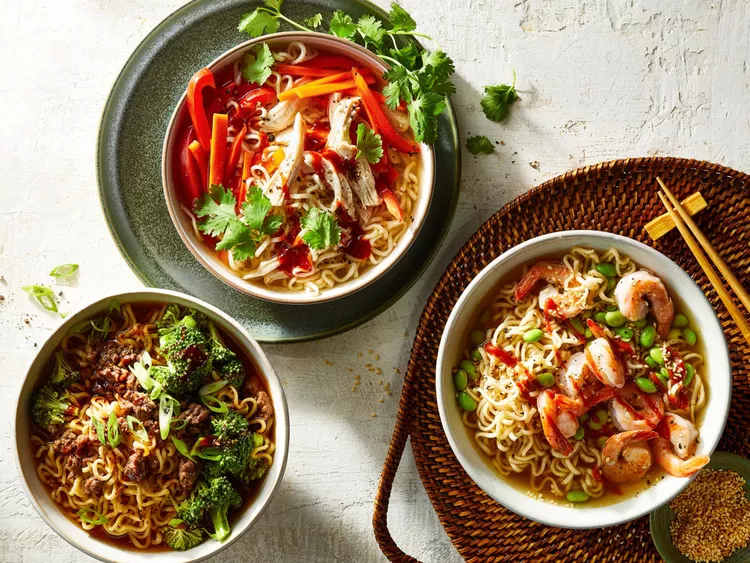

Ramen

Description
This is a basic noodle bowl recipe where you can substitute any type of broth, vegetable, protein, or sauce to your own taste. Different specific variations can be found in the footnotes.
Ingredients
- 3 cups low-sodium broth (any type of broth to taste)
- 1 cup mixed fresh vegetables
- 6 ounces cooked protein (any type of cooked meat, poultry, or tofu)
- 1 (3 ounce) package ramen noodles (without flavor packet)
- ⅛ teaspoon salt
- ⅛ teaspoon freshly ground black pepper
- 1 teaspoon sauce of choice
- garnish of choice (e.g. green onions, cilantro, etc.)
Steps
- Bring broth to a boil in a small saucepan. Reduce heat.
- Reduce heat. Add vegetables, protein, and noodles. Simmer, stirring occasionally, until ramen noodles are tender and ingredients are heated through, 3 to 5 minutes.
- Season with salt and black pepper. Top with sauce and sprinkle with garnish.